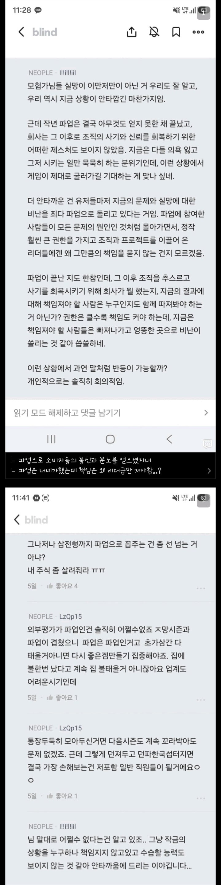

1. 파업직원탓만 하는게 억울
2. 윗선이 문제다
3. 파업으로 이득 못얻어서 사기가 팍 죽어부러쓰ㅜㅜ

1. 파업직원탓만 하는게 억울
2. 윗선이 문제다
3. 파업으로 이득 못얻어서 사기가 팍 죽어부러쓰ㅜㅜ
너의 말이 이해는 가지만 동의는 힘듬. 20주년 인질이 아니였어도 작년 기준으로 게임 상황도 그렇게 좋은 상황은 아니였음.
밸런스 문제나 레이드 보상 문제, 늦는 업뎃 문제로 불만이 꽤 쌓이던 상황이라 20주년 인질이 아니였다 해도 민심은 얻기 힘들었을거임. 톡 까놓고 말해서 소비자가 너가 말한 문제에 공감을 하려면 최소한 결과물이 좋아야함.
근데 결과물도 안좋은데 다른 게임은 하기도 힘든 20주년을 기념하는 행사를 인질 잡고 협박까지 했으니 이건 그냥 자폭할게요 하고 아주 잘 마른 지푸라기 뭉티기로 들고 석유터진 곳에 들어간 셈임
그럼 파업 시작할때 목적을 제대로 이야기하고 유저가 피해 안입는쪽으로 했다고 여론전이라도 했어야지.
하필 행사직전에 터트려가지고 민심부터 터지고 시작하니까 명분이고 뭐고 답도없어지잖아.
다른 직종은 파업할때 최소한인원으로 굴리는게 괜히 그러겠냐고
20주년 유저들의 축제를 인질잡고 파업한 이상 걍 쉴드불가임
이 글 틀림
이건 게임을 안하면서 단순히 기사와 렉카 글만 보고 판단한 것
근데 그때당시에 일단 20주년 인질로 파업 -> 이걸로 소비자 여론 등돌렸고
이후에 네오플 연봉 보니깐 상대적으로 밀리는거지 일반인 입장에서는 연봉 높은축에 속하는거라 여론이 아예 안돌아온거지
근데 까놓고말해서 저게싫었으면 넥슨밑으로 들어가질말던가..
한국에서 굳이 안떠나고 사회적인프라 다 활용해서 사업성공해서 백만장자됐더니 소득세많다고 국민들한테 자기들 아이템안팝니다 ㅅㄱ 하면서 국민인질로 징징거리면 한국이 뭘 어떻게해야할까?
팩트는 20주년 인질잡고 깝치다
오히려 물주인 유저가 기업편 들정도로
실패했단거임
이런 븅신같은 파업은 듣도보도 못함
게임사가 20주년 절대 포기 못할꺼라고 판단해서 협박한거면
게임사가 그걸 포기했을때 리스크도 생각하고 들어갔어야지
20주년 때 고퀄로 팍 실력 보여주고 파업해서 민심 잡기를 놔두고 20주년 유기해서 조지고 파업실패라도 했다는거냐 지금?
ㄷㄷㄷ 님천재임?
위아래로무능한게 환장의콜라보네 ㅋㅋ
전부다 사퍼보내서 짤라버려라 사퍼섭종도 하고 새로 뽑거나 중국한테 맡겨
유미리스파업견이 혀가기네
명분 다 스스로 깨부숴서 유저 지지도 못받는게 개그임
20주년 유기에 업계 최고대우 받고있다는거 들통나서 ㅈ박은거지 혓바닥이 기노 ㅋㅋㅋㅋㅋ
글 수정했길래 원문 적어드림
--------------------------------
뭐래는거야.
애초에 내가 말하는건 그거보다 훨씬 이전이야.
10년 안보임? 애초에 지금 던파 만드는 네오플에서 넥슨을 지탱한게 못해도 10년이고 그 10년동안 대우 못받은거 때문에 파업을 하기 시작한건데 뭘 겜안분 이러고 있냐.
타사 보다 많이 받으면 자사 성적 못내는 다른 팀보다 못받을 이유가 됨?
지금 애초에 파업 명분 자체가 넥슨 우리가 먹여 살렸는데 왜 우리 월급이 딴 팀보다 짜냐 이건데 꼴랑 2~3년 가지고 겜안분 운운하고 있으니... 지금 네오플 대우 못받았다고 말 나온게 그거보다 훨씬 더 된 사안이야.
---------------------------------
뭐 하고싶은 말은 많은데
간단하게 말하자면 임금 및 업무차원에서 노조편에서 회사 비판하던 유저들을 적으로 돌린건 노조 및 직원들입니다.